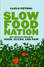

| Slow Food CHICAGO | |
| Taste, Tradition and the Honest Pleasures of Food | |
| Home Events Turkey Projects Mailing List Forum Volunteers About Us Membership |
Carlo Petrini to Speak in Chicago
Carlo Petrini, charismatic founder and driving force of the international Slow Food Movement, will be in Chicago on May 19th, to discuss his new book, Slow Food Nation: Why our Food Should be Good, Clean, and Fair.
Date: Saturday, May 19th, 2:00 pm His talk will focus on three strategies outlined in his new book:

Traveling the world in order to write Slow Food Nation, Petrini witnessed first-hand the many ways that local and native peoples feed themselves without making use of the methods employed by agribusiness and the food industrial complex described in such recent books as Fast Food Nation by Eric Schlosser and The Omnivore's Dilemma by Michael Pollan. Petrini relates real-life anecdotes about the behaviors of peoples in places as varied as Chiapas, Mongolia, Puglia, Bangladesh, and Sweden. He concludes that the food we eat should be healthful and delicious (good); sustainably produced using environmentally sensitive methods (clean); by producers who are justly compensated and treated with dignity (fair). Co-sponsors of this event are Slow Food Chicago, the Chicago Humanities Festival, L'Istituto Italiano di Cultura, the Alice Kaplan Institute for the Humanities, Chicago's Green City Market, and Rizzoli International. Petrini will present his lecture in Italian with an onstage translator. Afterwards he will be available to sign books, with on-site sales provided by The Book Stall of Winnetka. |
|
||||||||||||||
 |
||||||||||||||||
| www.slowfoodusa.org - www.slowfood.com - privacy policy |